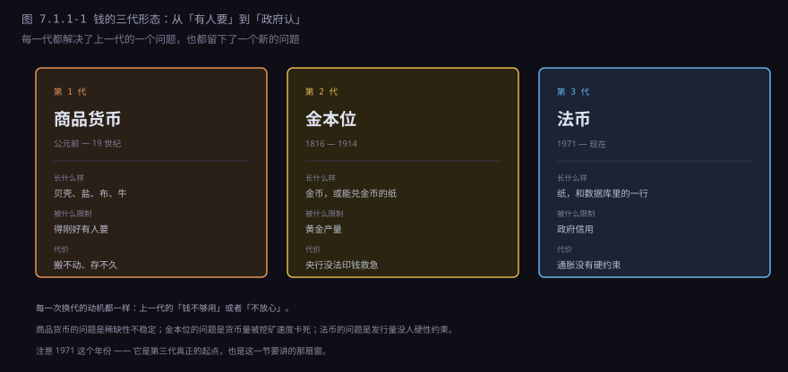
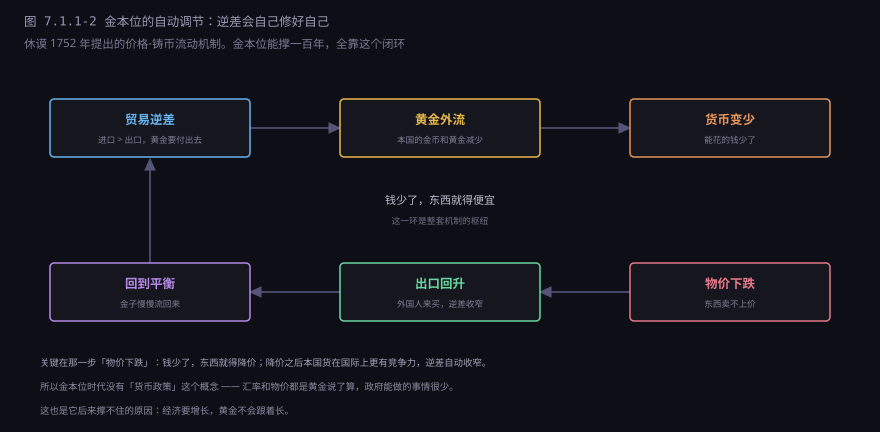
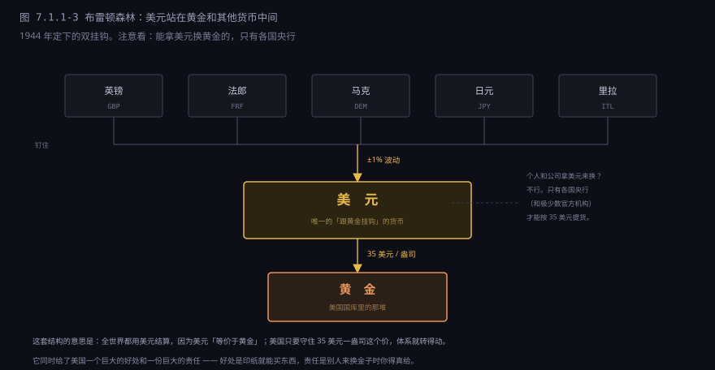
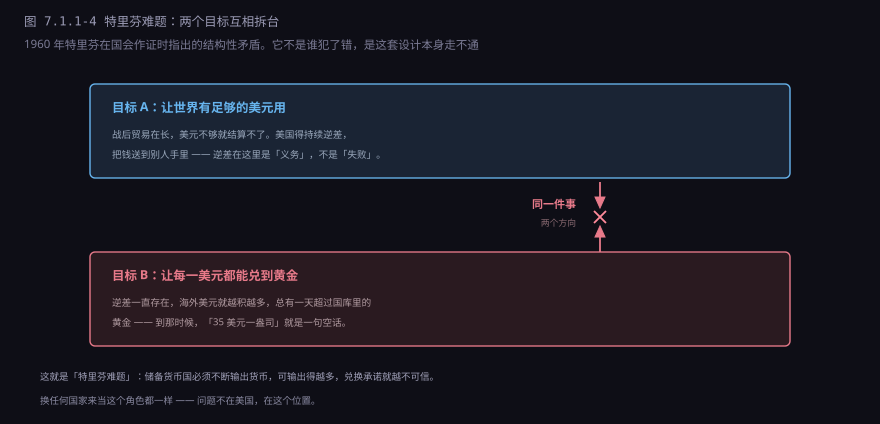
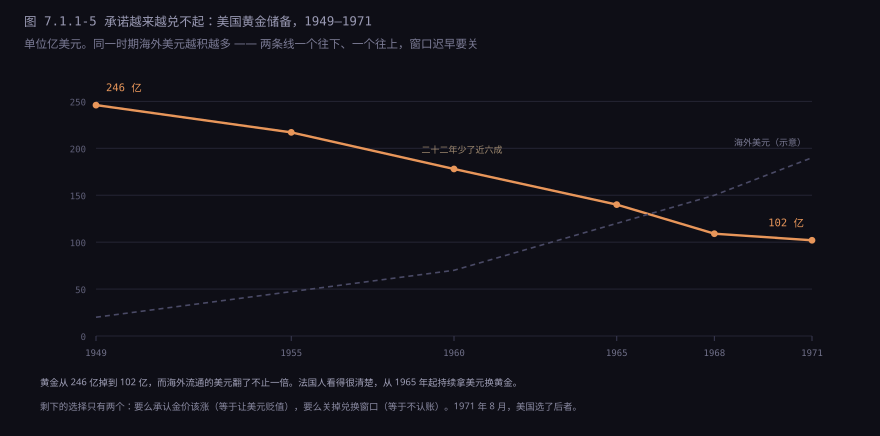
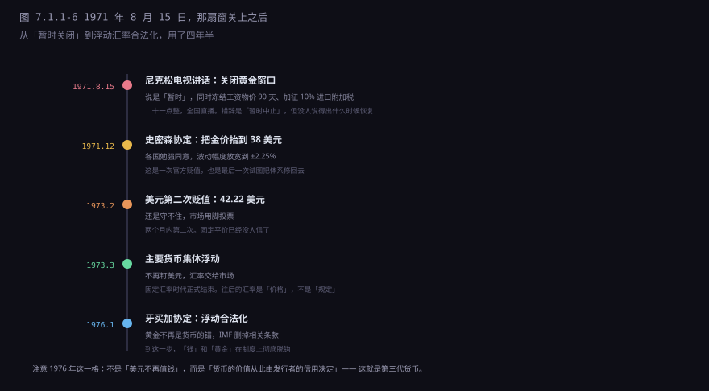

约 0.75 万字 · 6 张图 · 读完你能说清金本位靠什么自动平衡、 布雷顿森林的双挂钩是怎么搭的、特里芬难题难在哪， 以及 1971 年 8 月 15 日那个晚上到底关掉了什么
1971 年 8 月 15 日，星期天。晚上九点，尼克松出现在电视上，讲了十七分钟。
讲话的核心是三件事：关闭黄金窗口——外国央行拿美元来换黄金，美国不换了； 冻结工资和物价九十天；对进口商品加征 10% 的附加税。 这三件事同时宣布，事先没有跟任何盟友商量，连国务院都是当天下午才被告知。
用词很讲究。他说的是「暂时中止」（temporarily suspend）， 好像过一阵子就会恢复。但那个窗口再也没开过。 五十年后的今天，一美元能换到的黄金，是零。
这件事在历史上叫「尼克松冲击」（Nixon Shock）。叫「冲击」不是因为经济上的震动—— 那天市场甚至涨了——而是因为程序上的单方面： 一个国家的总统，在电视上宣布废除一套运行了二十七年的国际协议， 另外四十几个签约国是跟电视机前的观众一起知道的。
要理解他为什么这么干、以及为什么非干不可，得从头讲。 因为那扇窗不是某一天突然关上的，它是被一点点兑空的。
教科书上说货币有三个职能，这个说法没错，但容易背完就忘。换一种问法： 如果没有钱，哪些事会做不成？
最直接的是「双重巧合」。你有米，我想要米，可我手上只有布——得刚好找到一个 「有布、又想要米」的人，交易才能成。人一多，这个概率低到没法过日子。 这是货币作为交易媒介解决的问题。
第二个是标价。没有统一单位，每样东西都得用其他所有东西来标价： n 种商品需要 n(n−1)/2 个比价。十种商品是 45 个价，一百种是 4950 个。 有了货币，一百种商品只需要一百个价。这是计价单位。
第三个最容易被忽略，也最难：价值储藏。今天的劳动换成一张凭证， 三十年后拿出来用。这中间隔着三十年，谁也不能保证这三十年里发凭证的人还在、 还认账。货币的所有戏剧性，都出在这一条上。
| 职能 | 回答的问题 | 失效会怎样 |
|---|---|---|
| 交易媒介 | 拿什么换东西 | 退回物物交换，交易成本吃掉大部分产出 |
| 计价单位 | 这东西值多少 | 每天重贴价签，长期合同签不了 |
| 价值储藏 | 今天不花，明天还值多少 | 有钱就赶紧换成实物，储蓄消失 |
所以任何一代货币，本质上都在回答同一个问题：凭什么相信它明天还值这个数？ 人类试过的答案只有三类：它本身有用（米、布、盐）、 它能换成某种稀缺物（金本位）、发行它的人有信用（法币）。 正好对应下一张图里的三代。

不是因为它好看。能当货币的东西要同时满足五个条件，缺一个就出局：
| 条件 | 为什么重要 | 反例 |
|---|---|---|
| 稀缺 | 产量不能随便涨，否则持有者被稀释 | 贝壳：某个海岛发现新产地就崩了 |
| 均匀 | 每一单位都一样，不用逐个检验 | 牛：这头和那头不一样，还得看牙口 |
| 可分割 | 能拆成小份买小东西 | 钻石：切小了反而不值钱 |
| 不腐蚀 | 放十年还在，才能「储藏」 | 盐会化，粮食会烂，铁会锈 |
| 好辨认 | 一眼能看出真假，鉴定成本低 | 布匹：成色、密度、染料都要行家看 |
黄金五条全占。它化学性质极稳定（埋三千年挖出来还是那个样子）， 密度大到假货很难掺（一掂就知道），可以任意分割再熔合， 而且全球都有、又都不多——这点最关键：没有任何一个国家能垄断它的产量。
白银其实也符合，历史上长期和黄金并行（中国直到 1935 年还是银本位）。 黄金胜出是因为单位价值更高：同样买一栋房子，用黄金只要一小块， 用白银要扛一箱。大额支付和跨境搬运，黄金方便得多。
但黄金有一个致命缺点，要到工业时代才暴露：它的产量跟不上经济增长。 十九世纪全球经济在扩张，商品越来越多，可地上的金子每年只增一两个百分点。 钱不够用，物价就只能往下走——这叫通货紧缩，听起来像好事（东西便宜了）， 实际上是灾难：大家都预期明天更便宜，就都不买；不买，工厂就减产；减产，就裁员。
这个矛盾在十九世纪还不算严重，因为经济增长慢、人口也少。 到二十世纪，它变成了金本位撑不下去的根本原因。
金本位最迷人的地方，是它不需要央行管。贸易逆差会自己修好，靠的是一个闭环。
假设 A 国从 B 国买得多、卖得少，逆差。逆差要用黄金支付，于是 A 国的黄金流到 B 国。 A 国国内的黄金少了，流通的钱就少了（金本位下，纸币必须有黄金撑着，钱和金子是绑定的）。 钱少了，大家手上紧，消费和投资都降，物价跟着往下走。 物价一降，A 国的货在国际上就便宜了，B 国的人开始来买；同时 B 国的货在 A 国变贵，A 国人少买。 出口上去、进口下来，逆差收窄，黄金慢慢流回来。

这套逻辑是休谟在 1752 年写的，比李嘉图还早。它有一个漂亮的性质： 不需要任何人做判断。没有央行、没有汇率政策、没有外汇储备管理， 金子自己会流动，价格自己会调整，失衡自己会消失。
十九世纪的经济学家因此相信，世界是自我修复的。 政府要做的只有一件事：别插手。
上面那段推演里，藏着一个现实世界很难满足的前提：物价和工资必须能降下来。
物价能降，工资呢？工资是合同，是工会谈出来的，是一家人下个月的口粮。 没有哪个工人会主动说「为了国家的外部平衡，我接受降薪 15%」。 所以当黄金流出、货币收缩时，工资降不动，企业的成本降不下来， 最后只能靠裁员和倒闭，把整个社会的购买力打下去，物价才被动地降下来。
这就是金本位的真实成本：它的自动平衡，是用失业率换来的。 教科书上的闭环很优雅，落到现实里是工厂关门、工人排队领救济。
还有一层：这套机制要求国内经济为外部平衡让路。 逆差国不能搞刺激，因为刺激会让进口更多、黄金流得更快；它必须紧缩， 哪怕国内正在衰退。顺差国则相反，必须扩张，哪怕国内已经过热。
在十九世纪，这件事还能做到——因为那时候没有普选，工会弱，央行刚诞生， 政府不需要对失业率负责。到了二十世纪，民主政治和普选权普及之后， 没有一届政府敢为了汇率去制造失业。金本位的政治基础，比经济基础先垮了。
金本位的黄金时代是 1870 到 1914 年，四十多年。终结它的不是理论，是战争。
1914 年 8 月，一战爆发。交战国立刻停止兑换黄金——打仗要花钱，黄金不够， 只能印钞。战争打了四年，欧洲各国的货币供应量翻了几倍，物价翻了几倍， 而黄金储备几乎没动。战前的平价，在物理上已经不可能恢复了。
战后有一场著名的争论：要不要按战前平价恢复金本位？ 英国选了「要」。1925 年，财政大臣丘吉尔宣布英镑回到战前平价： 1 英镑兑 4.86 美元。
凯恩斯当时写了一本小册子，《丘吉尔先生的经济后果》，说这个决定是错的。 理由很直接：战后英国的物价和工资比美国高，按战前平价等于把英镑高估了大约 10%。 英镑一贵，英国的煤、纺织品、船运在国际上就卖不动。 要维持平价，只有两条路：让物价降 10%，或者让工资降 10%。
英国政府选了后者。1925 年到 1926 年，煤矿主开始削减工资、延长工时。 矿工拒绝，1926 年 5 月，英国爆发了九天的全国总罢工，一百多万人参加。 罢工最后失败了，矿工被迫接受更差的条件。而英镑并没有因此稳住—— 出口继续萎缩，黄金继续外流。
1931 年 9 月 21 日，英国放弃金本位。英镑在几个月内贬值了三成。 凯恩斯那本小册子里的每一句判断，六年之后都兑现了。
紧接着是大萧条。1930 年代，各国为了保出口，争相贬值货币—— 这叫「以邻为壑」：我贬值，我的货就便宜，你的出口就完蛋，于是你也贬值。 结果是全球贸易在四年里萎缩了三分之二。 金本位在战前是稳定的象征，在大萧条里成了传染病的载体： 坚持金本位的国家（法国、波兰）衰退最久，早放弃的（英国、日本）恢复最快。
到 1939 年，金本位已经名存实亡。战后要建一套新秩序，问题是：建什么样的？
1944 年 7 月，44 个国家的七百多名代表，住进了美国新罕布什尔州的一家酒店， Mount Washington Hotel。开了三个星期。会议的名字叫「联合国货币与金融会议」， 后来被叫作布雷顿森林会议——因为酒店所在的地方叫布雷顿森林。
会上有两套方案。
凯恩斯方案：建一个「国际清算同盟」，发行一种超国家的记账单位叫 Bancor， 各国的贸易差额都在这个体系里记，顺差国和逆差国都要调整（顺差国如果囤积太多，也要被罚）。 这是一个真正多边的设计，没有哪个国家的货币特殊。
怀特方案：美国财政部官员怀特提出的，建一个稳定基金， 各国往里面放钱，谁出现短期逆差就从里面借。基金以美元计价，美元和黄金挂钩。 这是一个以美元为中心的设计。
美国赢了。原因不在辩论水平，在实力：当时全世界三分之二的黄金在美国国库里， 战后重建的钱也只有美国出得起。谁出钱，谁定规则。
最终的结构就是那个著名的「双挂钩」：

第一层：各国货币钉住美元，汇率波动不超过 ±1%，要调整得报 IMF 批准。 第二层：美国承诺，35 美元换一盎司黄金，谁拿美元来都换——但只对各国央行和官方机构。
这套安排还顺手建了两个机构：IMF（国际货币基金组织）， 管短期国际收支失衡的贷款；世界银行，管战后重建的长期贷款。 两个机构到今天还在，职责已经变了好几轮。
凯恩斯的 Bancor 方案虽然输了，但它的思路没死——三十年后变成了 SDR， 也就是「特别提款权」。这个后面会讲。
布雷顿森林运行了十几年，看起来很好。欧洲在重建，日本在恢复，贸易在增长， 美元是最硬的通货——比黄金还方便，因为黄金要运输、要检验，美元只要记账。
1950 年代有个词叫「美元荒」：欧洲国家都想买美国货，但手上没有美元， 美国又不需要买他们那么多东西。美元不够用，贸易就转不动。 这时候美国的逆差是好事——它把美元送到全世界，让大家有生意做。
1960 年，一个叫罗伯特·特里芬的耶鲁教授在国会作证，指出了一个结构性矛盾：
这个论证的漂亮之处在于：它不需要任何国家犯错。哪怕美国一直很节俭、 经济一直很健康，只要世界需要更多美元，这个矛盾就会积累。 问题出在「用一个国家的货币当世界货币」这个结构上，不在这个国家的品行上。

当时没多少人当回事。因为 1960 年的美国还很健康，黄金还有 178 亿美元， 通胀也低。特里芬的预言像是学者的危言耸听。
但接下来十年，每一件事都在验证他。
1960 年代，美国的支出越来越大：越战、登月、高速公路、社会保险扩张（「伟大社会」计划）。 钱不够，就印。印出来的美元一部分留在国内，一部分流到海外—— 买外国货、驻军开支、对外援助、跨国公司的投资。
海外美元的池子越涨越高，而美国国库的黄金在往下掉。

1965 年，法国总统戴高乐公开批评美国的「过分的特权」——美国可以用自己印的纸， 买下法国的公司和土地。法国开始持续把美元换成黄金，一批一批地换。 其他国家跟着换。
美国试过各种补丁：1961 年搞「黄金池」，几个国家一起在伦敦市场抛黄金压价， 1968 年黄金池解散；1968 年搞「双轨制」，官方价还是 35 美元， 市场价放开自由浮动——等于承认官价是假的。
到 1971 年，美国的黄金只剩 102 亿美元，而海外官方持有的美元超过 400 亿。 账面上已经破产了，只是还没人把最后一层窗户纸捅破。
1971 年 5 月，西德马克受不了了，宣布浮动。投机资金涌向马克和日元， 美元被抛售。8 月初，国会预算办公室的一份报告泄露，说贸易逆差可能比预期大得多。 市场彻底慌了。
尼克松面临的选择只有三个：加税、管制资本流动、或者关掉黄金窗口。 加税过不了国会；管制会得罪华尔街；那就关窗。
8 月 13 日，星期五。尼克松带着十几个顾问飞到戴维营，对外说是去「讨论预算」。 实际上，他们在那里关了两天，起草一份完全不同的东西。
星期天下午，他们通知了美联储主席、几个关键盟友，还有国务卿—— 都是在讲话前几个小时。日本和西德的大使，是在讲话开始前不久才被告知的。
晚上九点，讲话播出。三件事：
| 措施 | 实际内容 | 真实目的 |
|---|---|---|
| 关闭黄金窗口 | 停止对外国央行兑换黄金，措辞是「暂时」 | 止住黄金流失，把问题变成别人的问题 |
| 冻结工资物价 90 天 | 全国强制性冻价，二战后第一次 | 压住通胀预期，给贬值争取时间 |
| 10% 进口附加税 | 对所有进口商品临时加税 | 逼贸易伙伴升值货币、开放市场 |
第三件事经常被忽略，但它才是真正的杀招。关掉黄金窗口，是防守： 不让金子再流出去。加进口税，是进攻：逼着德国和日本把货币升值， 否则他们的货在美国就卖不动。
换句话说，这不是一次被动的认输，是一次主动的重新定价—— 美国用单边手段，把调整的成本转嫁给了贸易顺差国。
市场第二天的反应很有意思：道琼斯指数涨了 33 点。因为「冻结工资物价」 被理解成了利好——成本锁住了，企业利润会好看。 没人意识到，那个星期天晚上，一套运行了二十七年的国际货币协议已经结束了。
关窗之后，各国货币全部浮动，汇率乱成一团。美国想重建固定汇率，但条件变了： 美元不能再换黄金，凭什么让别人钉住你？
1971 年 12 月，十国集团在华盛顿的史密森学会大楼开会，达成《史密森协定》： 黄金官价从 35 美元提高到 38 美元（美元对黄金贬值 7.89%）， 各国货币重新确定平价，波动幅度放宽到 ±2.25%。
尼克松称之为「世界历史上最伟大的货币协议」。它活了十四个月。
1973 年 2 月，美元第二次贬值，金价变成 42.22 美元。3 月，主要货币集体浮动， 固定汇率体系正式结束。这一次没有人再试图修它。

1976 年 1 月，IMF 的临时委员会在牙买加金斯敦开会，通过了《牙买加协定》： 取消黄金官价，黄金不再作为货币定值的标准，汇率安排由各国自选。 这个协定 1978 年 4 月正式生效，就是今天这套体系的章程。
下一节讲牙买加体系的具体规则。这里先说一个容易被忽略的技术后果。
1971 年之后，货币的定义变了。以前它是一张兑换券： 你拿着它，可以换到确定重量的金子。现在它是一张欠条： 你拿着它，只能换到「发行者说它值多少」。
这个变化带来三个后果，每一个都影响到现在：
第一，货币政策成了真正的工具。 金本位下，央行没法决定货币总量——那是由金矿决定的。法币时代， 央行可以通过利率、准备金、公开市场操作来调节货币供应。 经济衰退就放水，过热就收水。这是 1971 年之后才有的能力。
第二，通胀变成了常态。 金本位下，物价长期是轻微下降的（因为经济增长快于黄金增长）。 法币时代，物价长期是上升的——因为货币供应可以无限增加， 而政治总是倾向于多印一点（多印能刺激短期增长、能还债、能让选民高兴）。 过去五十年，主要经济体的物价平均每年涨 2% 到 4%， 按 3% 算，二十四年购买力减半。
第三，汇率变成了价格。 以前汇率是规定的（1 英镑 = 4.86 美元，写死的），现在是市场报出来的， 每秒都在变。这直接催生了一整套技术系统：实时行情、外汇报价引擎、 跨境报文里的汇率字段、以及后来的汇率衍生品。
还有一个更隐蔽的后果，下一节讲银行的时候会用到：法币时代， 钱可以被「创造」出来。银行放一笔贷款，账上就多了一笔存款， 这个过程不需要先有人存钱。金本位下这条路走不通（没有金子就不能发钞）， 法币时代它成了整个经济运转的核心机制。
把这套体系捧得太高或者骂得太狠，都没什么用。它解决了几个真问题， 也留下了几个真问题：
| 它做不到 | 原因 | 现实表现 |
|---|---|---|
| 保证购买力 | 发行量没有硬约束，长期必然贬值 | 三十年前的 100 块，现在买不到当年的三成 |
| 自动纠正失衡 | 没有黄金的强制结算，逆差可以一直拖着 | 美国的贸易逆差连续几十年，靠资本流入填 |
| 让小国同时要三样 | 汇率稳定、资本自由流动、货币政策独立，三者只能选两个 | 这就是「三元悖论」，下一节细讲 |
| 公平地分配新钱 | 新印的钱先到谁手上，谁就占便宜 | 资产价格先涨，工资后涨，差距拉大 |
最后一条叫「坎蒂隆效应」，三百年前就有人看出来了： 新钱不是均匀撒下去的，是从银行、从金融市场、从离印钞机近的地方， 一层层往外流。先拿到的人按旧价格买东西，最后拿到的人面对的是已经涨完的价格。 所以「印钱」从来不是中性的，它是一次财富再分配，只是没人投票决定过。
到这里，1971 年那扇窗的故事讲完了。它关掉的不只是一个兑换承诺， 还关掉了「货币必须有实物撑着」这个延续了几千年的信念。
下一节接着讲：窗关上之后，世界按什么规则运转？浮动汇率是怎么形成的？ 为什么美元没有黄金撑着，却仍然是全世界的储备货币？ 以及那个被反复提起的 SDR，到底是什么东西。